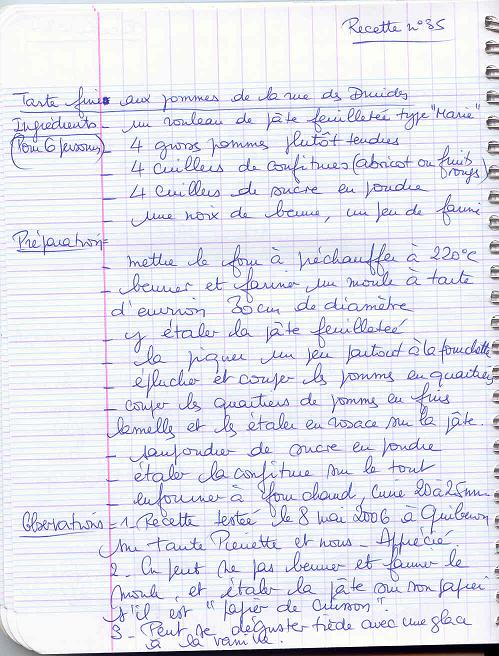
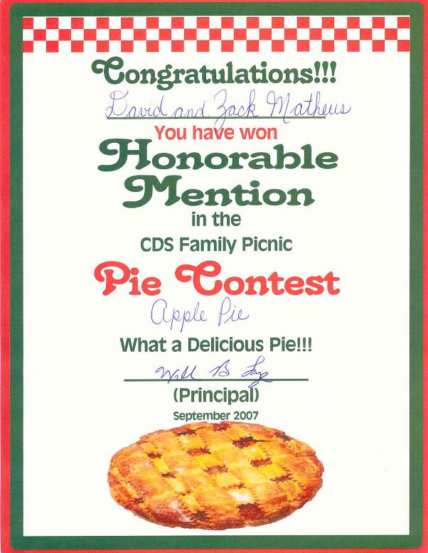

Recette n°35 :
Tarte fine aux pommes de la rue des Druides
Cette recette a valu une "honorable mention" au concours international
de tartes d'Escazu de septembre 2007 (cf. diplôme après la recette)

